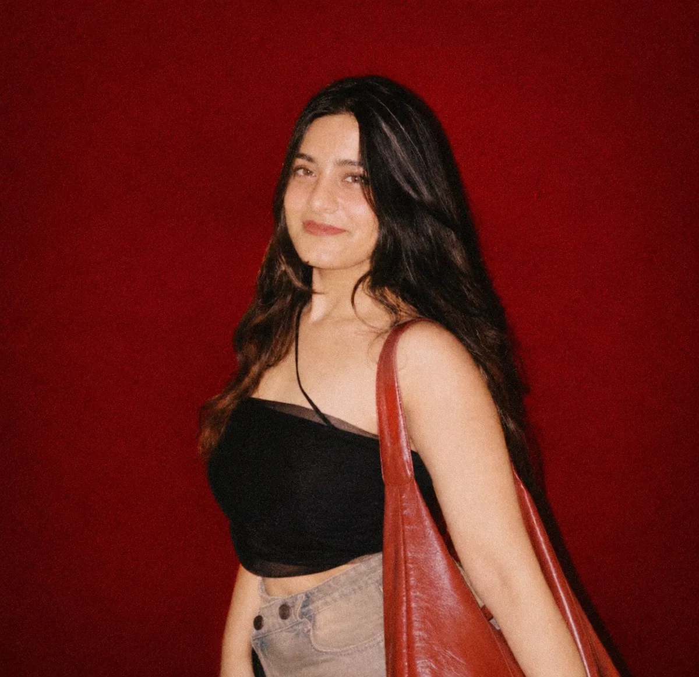
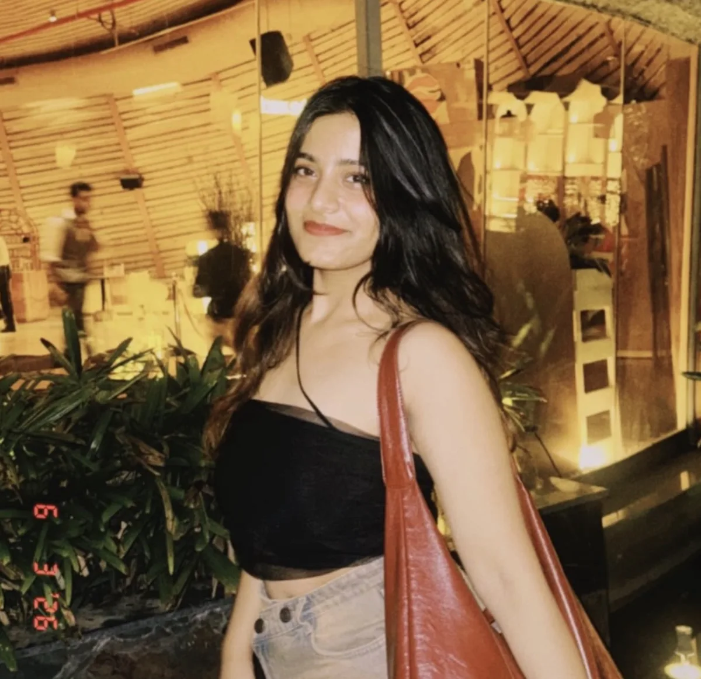
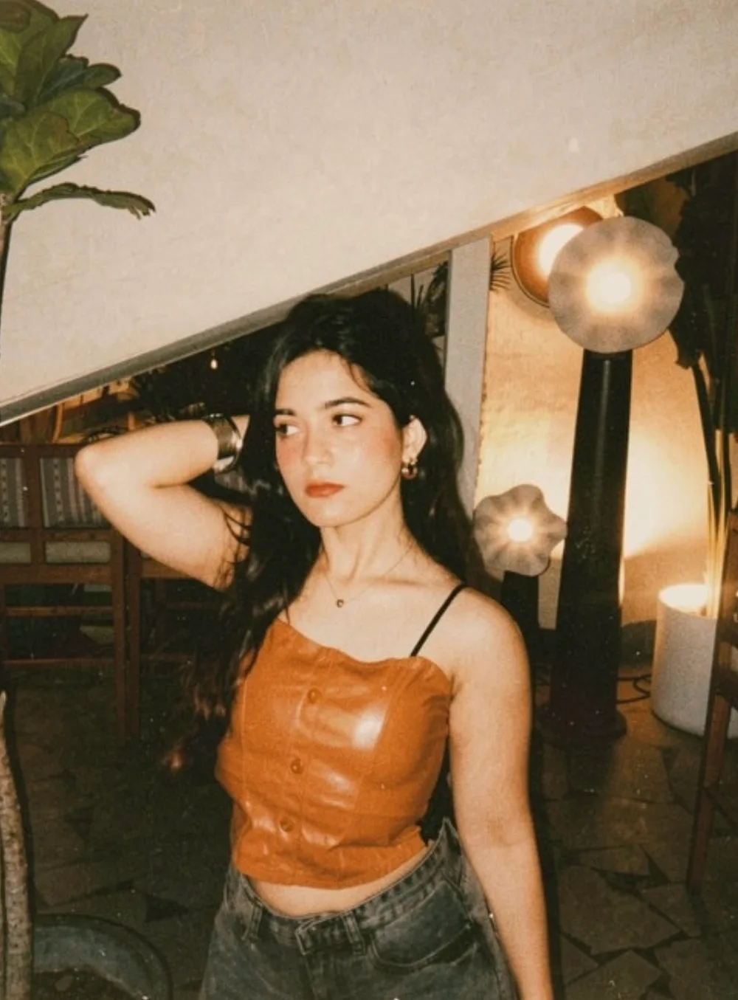
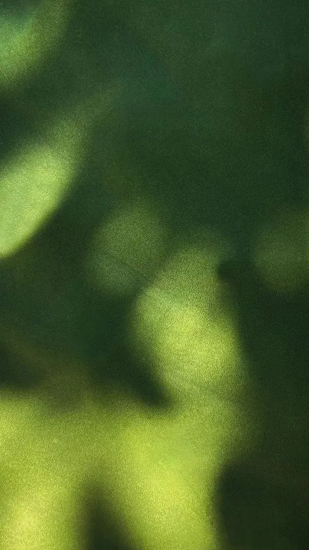

Anticipation, built post by post
A storytelling-led rollout around Chef Kunal’s return to Indore.
Based in India · working with London, Dubai, New York
I launch restaurants and lifestyle brands, from the first post to opening night, with a full design studio behind me.
Campaign results · Pincode by Kunal Kapur launch, month one

01 · The paper trail
go on, move them around ↓


Indore was talking.


02 · Selected work
03 · Featured case · Pincode by Kunal Kapur
A storytelling-led rollout around Chef Kunal’s return to Indore.
Dainik Bhaskar, Free Press Journal and TheLabMag covered the launch.
Screens and standees at high-footfall touchpoints for discoverability and recall.

Postcards, stamps and keepsakes, sourced and sent to creators and media.

With Her Awaaz Foundation, women artisans turned the bill into a story.

Launch dinner with Chef Kunal Kapur and Indore’s tastemakers.

04 · About
Part marketer, part storyteller. Always drawn to the kind of stories that make people feel something, remember something, or belong somewhere.
I’m a launch and brand marketer from Indore. I’ve launched a celebrity chef’s restaurant, brought pop-up culture to the city and filled rooms with workshops people paid to attend. Thoughtful in strategy, obsessive about details, endlessly curious about what makes people connect.
not just building brands. building reasons to care.
What the brand stands for, and the campaigns that carry it to the right people.
Launches, pop-ups and workshops that turn a brand into a place people want to be.
Story-led grids, stories and creatives, built end to end for the platform.
The brand, the city, the people.
Lots of ideas. Most get cut.
Moodboards and references.
Until it feels real.
On the feed and on the ground.
somewhere around step 03: “this is tricky”. it always works out.
05 · Work with me
Quoted in £ or $ for international brands. 50% to begin, the rest on delivery.
For a restaurant or brand opening in a new city.
Ongoing content and community after you open.
A new identity, website and launch, all under one roof.
Studio partner: Beyond Branding. Identity, websites and packaging are designed in-house with my studio partner, so you get one point of contact from brand to launch.
Visit the studio ↗
see you soon ♡


